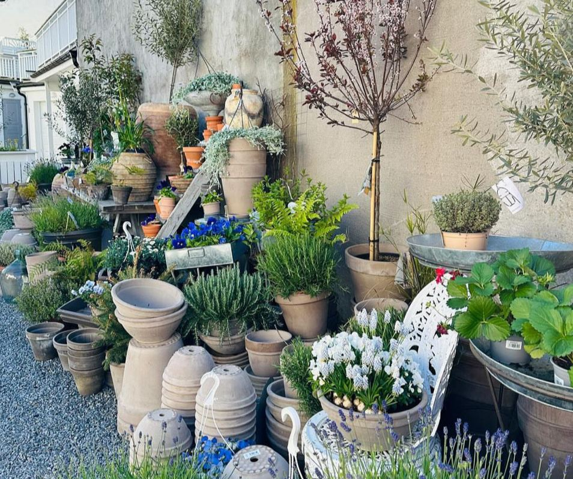
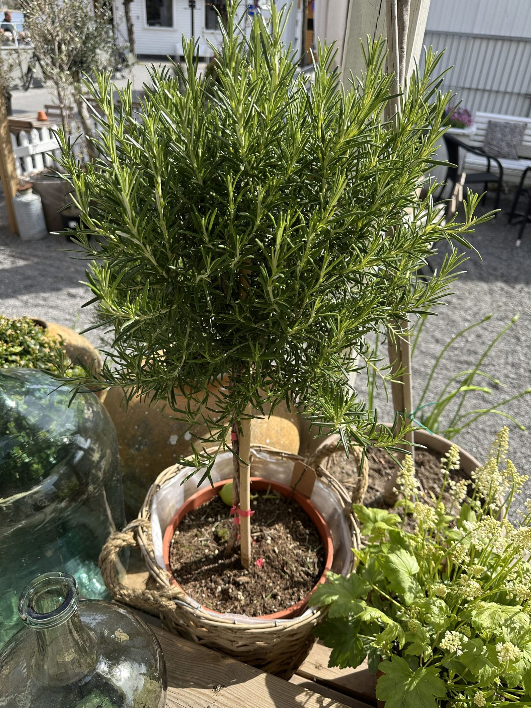
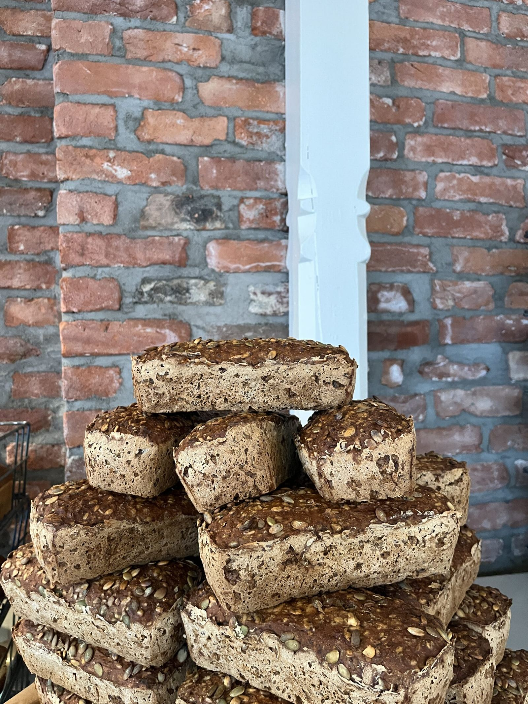

Blomstrende planter
Blomstrende planter
Søk Stavern Blomstermakeri Meny Vil du bestille blomster? Blomster til begravelse Produkter Kontakt oss Blogg Meny Søk Søk etter: Lukk søk Lukk meny Vil du bestille blomster? Blomster til begravelse Produkter Kontakt oss Blogg Vil du bestille blomster? Blomster til begravelse Produkter Kontakt oss Blogg Kategori: Sukkulenter Tibake til Blogg HOVEDBLOGG Sukkulent-planter Kaktuser og sukkulenter, lite strev, mye glede. Selve betydningen av ordet sukkulent stammer opprinnelig fra latin og betyr jus. Sukkulenter er en typisk husplante som vokser innendørs svært enkelt og kommer i mange ulike varianter, […]
Meld deg på vårt nyhetsbrev her for oppdatering når vi legger ut nye skatter i nettbutikken vår.
Vi bruker informasjonskapsler (cookies) for å øke brukervennligheten på nettsiden og for markedsføring. Ved at du fortsetter å bruke bywink.no, forutsetter vi at du samtykker til dette. Les mer om personvern.
Søk Stavern Blomstermakeri Meny Vil du bestille blomster? Blomster til begravelse Produkter Kontakt oss Blogg Meny Søk Søk etter: Lukk søk Lukk meny Vil du bestille blomster? Blomster til begravelse Produkter Kontakt oss Blogg Vil du bestille blomster? Blomster til begravelse Produkter Kontakt oss Blogg Kategori: Blomstrende planter Her finner du informasjon om mange forskjellige blomstrende planter. Vi legger stadig ut flere blogger om blomsterplanter. Følg med for mer.



Kort fortalt: hva trenger du?
Beskriv saken, så svarer vi med hva det krever og hva det koster.